Mål, skud og redninger live
Før håndboldstatistik fra sidelinjen: mål, skud, redninger og udvisninger med ét tryk. Skudkort, målvogterens procent og sæsonens tal – uden internet.
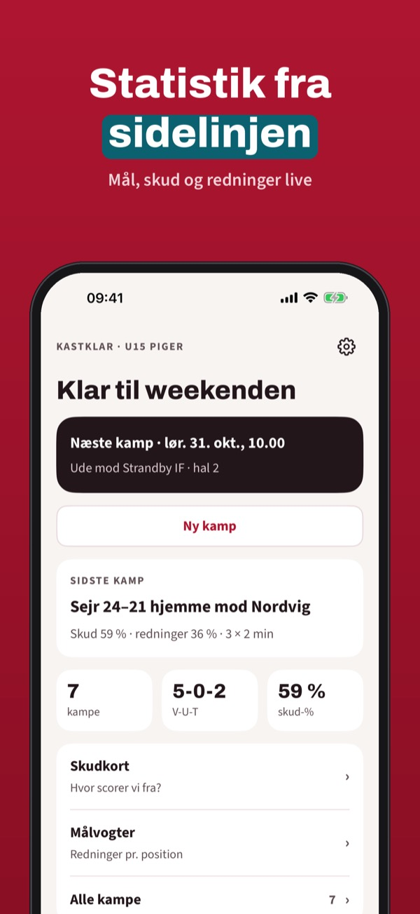
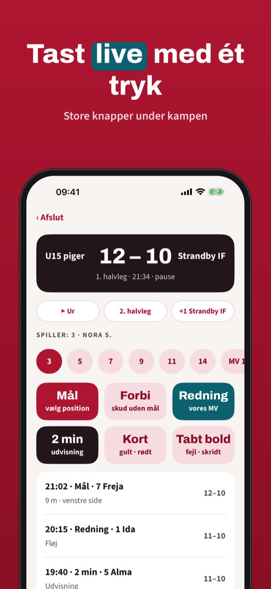
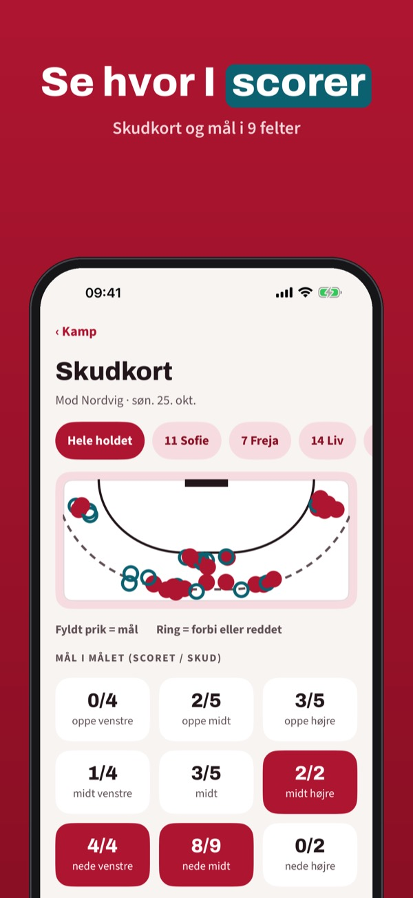
Kastklar er statistikbogen til trænere, holdledere og forældre: tast kampen live og få tallene, når slutfløjtet lyder.
Tre kampe med live-registrering og kampresumé kan bruges uden køb. Fuld version er et engangskøb, der låser ubegrænsede kampe, skudkort, sæsontal og PDF op. Intet abonnement.
Kastklar er ikke tilknyttet noget forbund eller nogen klub. Del kun billeder og navne på børn med forældrenes samtykke.
Terms of Use (EULA): https://www.apple.com/legal/internet-services/itunes/dev/stdeula/
Privacy: https://baytechbv.github.io/privacy/kastklar-eu/
Goals, schoten en reddingen
Houd handbalstatistieken bij langs de lijn: goals, schoten, reddingen en tijdstraffen met één tik. Schotkaart, keeperspercentage en seizoenscijfers – zonder internet.
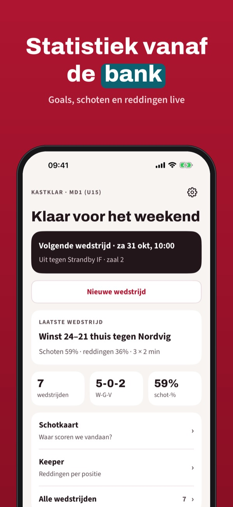
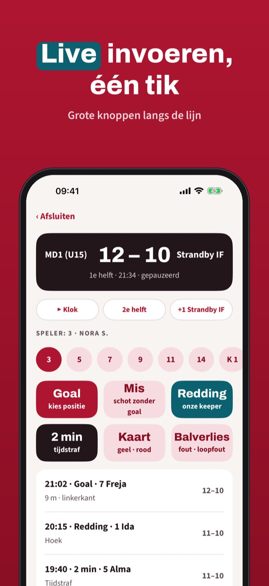
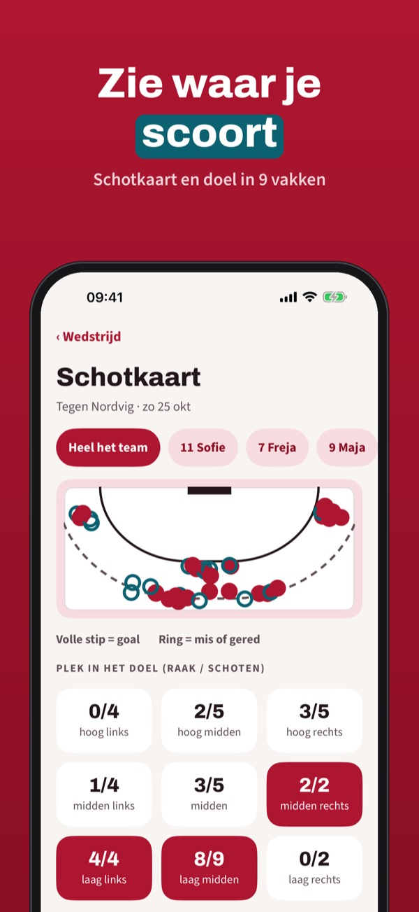
Handbalstat (Kastklar) is het statistiekboek voor trainers, teambegeleiders en ouders: voer de wedstrijd live in en zie de cijfers na het eindsignaal.
Drie wedstrijden met live invoer en samenvatting kun je zonder aankoop gebruiken. De volledige versie is een eenmalige aankoop voor onbeperkte wedstrijden, schotkaart, seizoen en PDF. Geen abonnement.
Handbalstat is niet verbonden aan een bond of club. Deel foto’s en namen van kinderen alleen met toestemming van de ouders.
Terms of Use (EULA): https://www.apple.com/legal/internet-services/itunes/dev/stdeula/
Privacy: https://baytechbv.github.io/privacy/kastklar-eu/
Mål, skudd og redninger live
Før håndballstatistikk fra sidelinjen: mål, skudd, redninger og utvisninger med ett trykk. Skuddkart, keeperprosent og sesongens tall – uten nett.
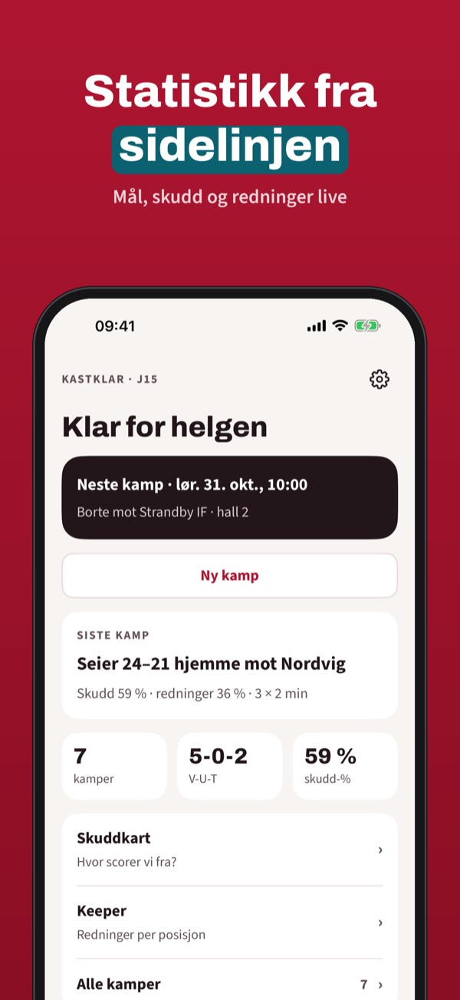
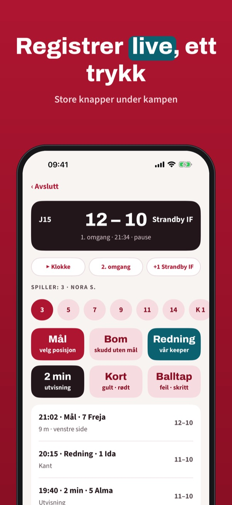
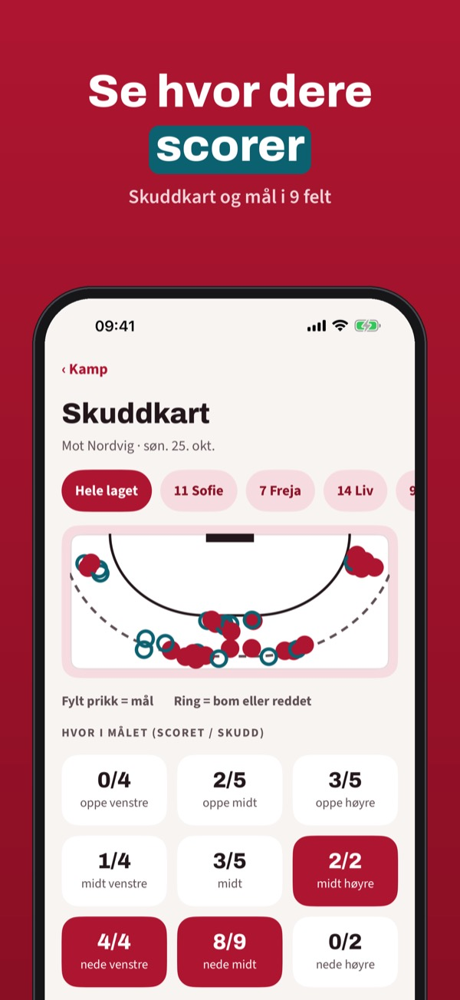
Kastklar er statistikkboka for trenere, lagledere og foreldre: registrer kampen live og få tallene når sluttsignalet går.
Tre kamper med live-registrering og sammendrag kan brukes uten kjøp. Fullversjonen er et engangskjøp som låser opp ubegrensede kamper, skuddkart, sesongtall og PDF. Ikke abonnement.
Kastklar er ikke tilknyttet noe forbund eller noen klubb. Del bare bilder og navn på barn med foreldrenes samtykke.
Terms of Use (EULA): https://www.apple.com/legal/internet-services/itunes/dev/stdeula/
Privacy: https://baytechbv.github.io/privacy/kastklar-eu/
Mål, skott och räddningar
För handbollsstatistik från sidlinjen: mål, skott, räddningar och utvisningar med ett tryck. Skottkarta, målvaktens procent och säsongens siffror – utan nät.
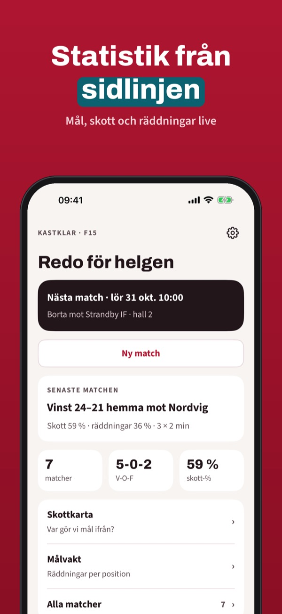
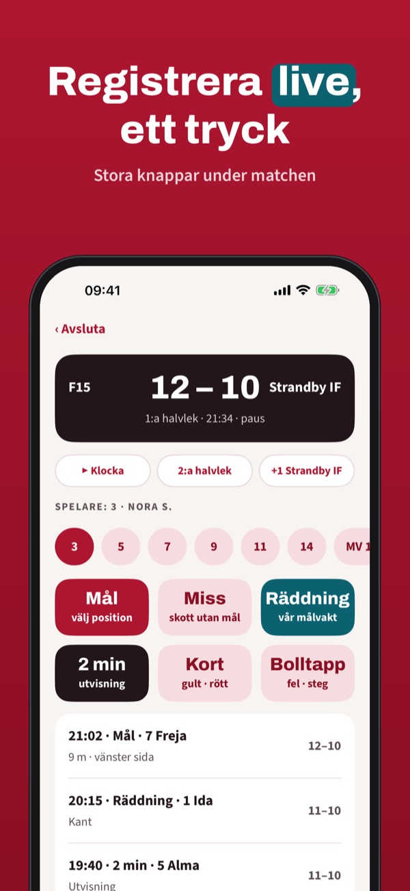
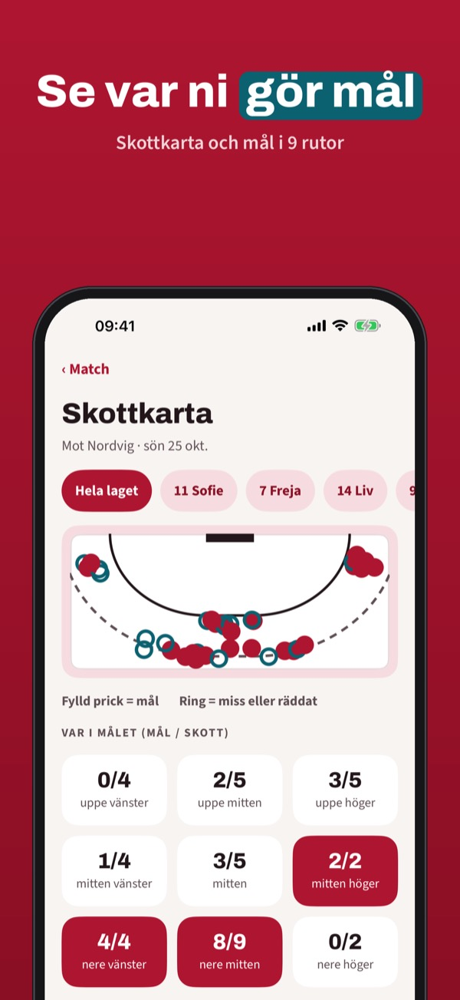
Kastklar är statistikboken för tränare, lagledare och föräldrar: registrera matchen live och få siffrorna när slutsignalen går.
Tre matcher med liveregistrering och sammanfattning kan användas utan köp. Fullversionen är ett engångsköp som låser upp obegränsat med matcher, skottkarta, säsong och PDF. Ingen prenumeration.
Kastklar är inte knuten till något förbund eller någon klubb. Dela bara bilder och namn på barn med föräldrarnas samtycke.
Terms of Use (EULA): https://www.apple.com/legal/internet-services/itunes/dev/stdeula/
Privacy: https://baytechbv.github.io/privacy/kastklar-eu/
Tore, Würfe und Paraden live
Handballstatistik von der Seitenlinie: Tore, Würfe, Paraden und Zeitstrafen mit einem Tipp. Wurfbild, Torhüterquote und Saisonzahlen – ohne Internet.
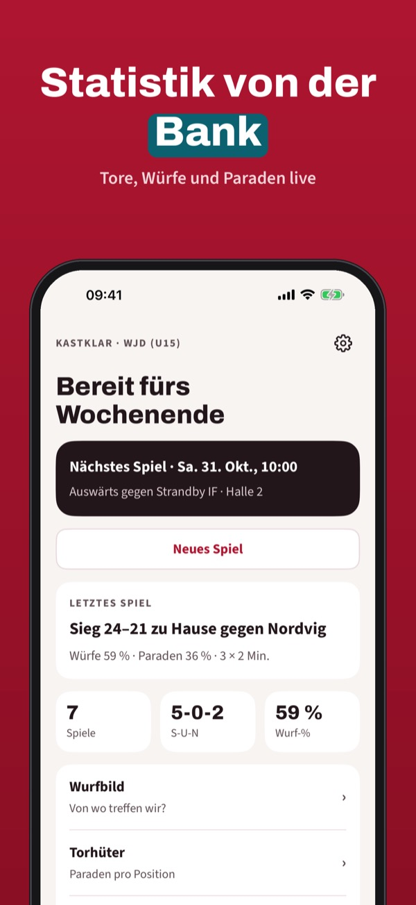
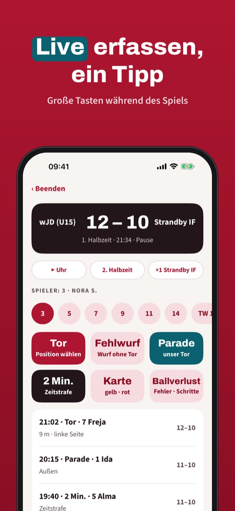
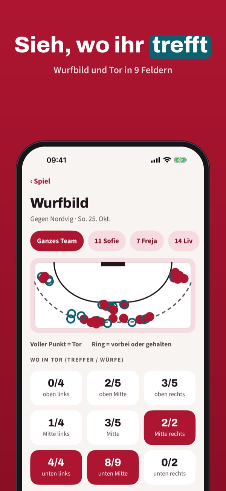
Kastklar ist das Statistikbuch für Trainer, Betreuer und Eltern: Spiel live erfassen und die Zahlen nach dem Schlusspfiff sehen.
Drei Spiele mit Live-Erfassung und Spielbericht kannst du ohne Kauf nutzen. Die Vollversion ist ein Einmalkauf für unbegrenzte Spiele, Wurfbild, Saison und PDF. Kein Abo.
Kastklar ist mit keinem Verband und keinem Verein verbunden. Teile Fotos und Namen von Kindern nur mit Zustimmung der Eltern.
Terms of Use (EULA): https://www.apple.com/legal/internet-services/itunes/dev/stdeula/
Privacy: https://baytechbv.github.io/privacy/kastklar-eu/
Buts, tirs et arrêts en direct
Les stats de handball depuis le banc : buts, tirs, arrêts et exclusions en un geste. Carte des tirs, pourcentage du gardien et chiffres de la saison – sans internet.
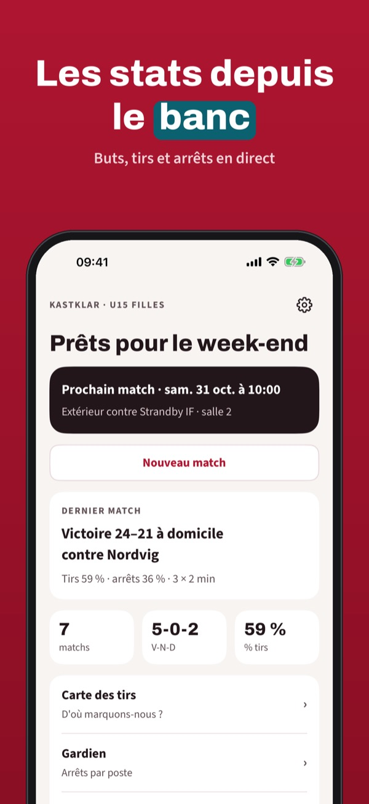
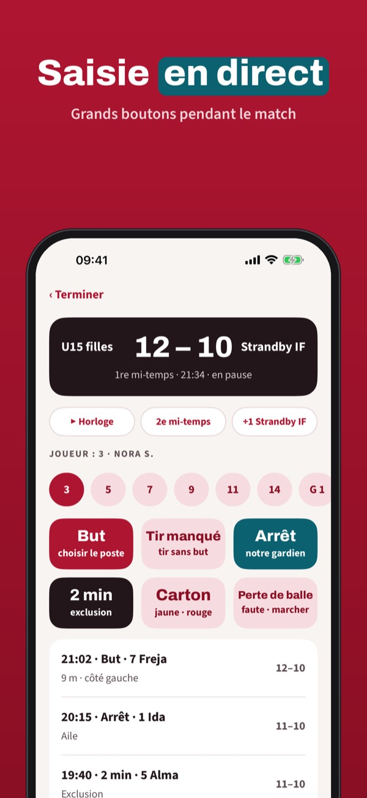
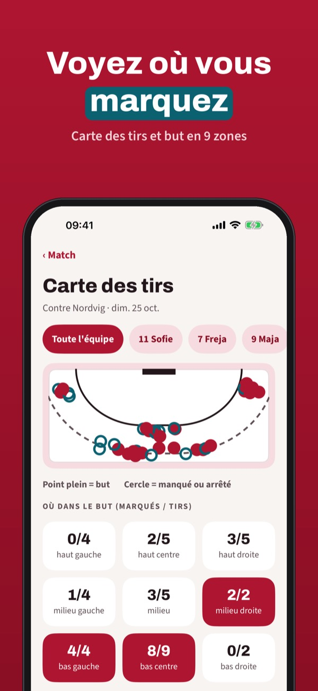
Kastklar est le carnet de stats des entraîneurs, dirigeants et parents : saisissez le match en direct et voyez les chiffres au coup de sifflet final.
Trois matchs avec saisie en direct et résumé sont utilisables sans achat. La version complète est un achat unique : matchs illimités, carte des tirs, saison et PDF. Sans abonnement.
Kastklar n’est lié à aucune fédération ni à aucun club. Ne partagez photos et noms d’enfants qu’avec l’accord des parents.
Terms of Use (EULA): https://www.apple.com/legal/internet-services/itunes/dev/stdeula/
Privacy: https://baytechbv.github.io/privacy/kastklar-eu/